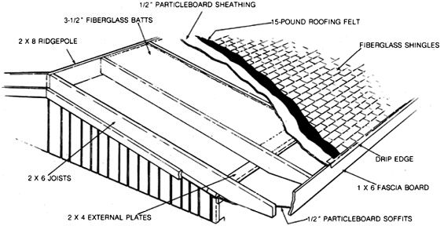

This family has discovered that putting a new "hat" on their old mobile home pays off in more ways than one.
It's estimated that the typical mobile home gives up between 15% and 22% of its heat through the ceiling. For a pre-1976, non-HUD-regulated home located in the northern United States, this translates to a loss of from 104 to 183 gallons of fuel oil every winter season! Fortunately, most mobile home owners-including those living in newer, HUD-approved housing-can take steps to reduce this flow to a trickle . . . and they will decrease their home's maintenance requirements and improve its appearance in the bargain.
Mr. L.T. Ashe and his family moved into their new 14' X 70' home two years ago, and it took only two rainstorms to convince them that something had to be done about the situation overhead. Not only was the racket of the raindrops rebounding off the metal roof annoying, but the dwelling's lack of overhangs at its edges made it nearly impossible to keep the windows clean and free of streaks. Furthermore, L.T. was concerned about the integrity of the sealant used on the home's exterior seams, and he especially worried about how it would hold up under the heat of the high summer sun.
The answer was a roof-over, which is a conventionally built, wood frame-and-sheathing "cap" atop a structure's existing roof. For the cost of some common building materials and a little time and effort expanded by family and friends, the Ashes are now able to enjoy comfort rivaling that of any site-built home.
There are no secrets to the construction process, and the cap can be added to any structurally sound unit with a standard wood en top plate, regardless of whether the exist ing roof is flat, domed, or pitched. To kick off the project, the crew first calculated the materials requirements. Planning their esti mates around standard construction practices and taking advantage of reduced prices at lo cal home improvement centers, they were able to purchase everything-including dimensional lumber, insulation, sheathing, roof ing materials, nails, and paint-for just over $1,800.
With the materials on hand, the next step was to nail an external 2 X 4 plate along the entire length of each side of the structure, right through the metal roof sheathing and into the existing top plate of the walls below. Even though this strip would eventually be covered, caulking was used at the nail penetration points to minimize the chances of any condensation finding its way into the interior walls.
With that step completed, the spare-time carpenters began cutting and mounting the more than six dozen 2 X 6 roof joists. The idea was to maintain standard construction techniques, so a full-length 2 X 8 ridgepole was used, as was an 18" overhang. The joist spacing was set at 24" on center to accommodate standard 2'-wide, 3-1/2" fiberglass batts.
Since the Ashes' mobile home had a peaked roof to begin with, the new roof was similarly pitched, and the faced insulation batts were laid, vapor barrier down, between the rafter channels. However, if a flat- or dome-roofed home were being fitted, a 1 X 6 ridgepole could be used along with 2 X 6 collar ties to achieve the necessary 3-in-12, or greater, pitch, and the cap would rest entirely on the external wall plates. Metal or wooden siding would then be used to cover the exposed gable ends.
When the 1/2" particleboard roof sheathing was fastened in place, the 3-1/2" batting left a couple inches of air space between the two roofs for circulation. A full-length ridge vent was placed at the peak to provide an outlet for warmed, moisture-laden air. The sheathing was covered with roofing felt and fiberglass shingles to give it the protection and appearance of any residential roof.
To finish the project, L.T. decided to dress the exposed rafter ends with 1 X 6 fascia board and to cover the eave overhangs with 1/2" particleboard soffits. At present, spacing behind the fascia allows for some air circulation, but Mr. Ashe plans to have some soft vents installed in the future . . . and to add gutters and downspouts to prevent soil erosion below the eaves.
Besides improving the appearance and comfort of the mobile home, the roof-over improves its value and cuts yearly maintenance-as well as heating and cooling costs-significantly. In some locales, a building permit may be required before construction can begin, but that's a small price to pay for such conspicuous gain.
|
 |
|
|